En esta sección encontrarás algunos de los dibujos en trenes que trascendieron en la historia del graffiti Neoyorquino
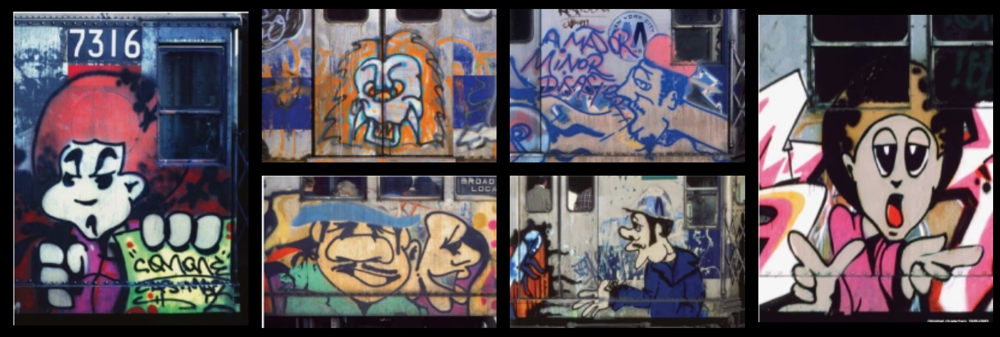
Creatividad, dibujo y adrenalina
Los "characters" o personajes que acompañaban las letras en los graffiti eran una extensión de la creatividad de los escritores. Estos personajes, a menudo diseñados como figuras humanas, animales o monstruos, se integraban dentro de las obras para darles más profundidad y expresión. Mientras que las letras representaban la firma del artista, los personajes añadían un elemento narrativo y visual que enriquecía la pieza. Los personajes fueron evolucionando con el tiempo, volviéndose más detallados y complejos, y llegaron a ser una parte esencial de la identidad de muchos grafiteros, como el famoso personaje de “The Rascals” de Lee.
Personajes
Los personajes o "characters" que acompañaban a las letras en el graffiti de Nueva York cumplían un papel fundamental en el impacto visual de cada pieza. Estos dibujos solían ubicarse junto a las letras, actuando como un complemento que potenciaba el mensaje de la obra y atraía más la atención del espectador. Los characters se diseñaban para capturar la mirada y darle más personalidad al graffiti, creando un equilibrio entre las formas de las letras y las figuras. Muchos artistas desarrollaban un estilo característico para sus personajes, haciéndolos únicos y reconocibles, lo que ayudaba a diferenciar sus obras de las de otros graffiteros. Estos dibujos lograban darle profundidad a las piezas, haciendo que cada graffiti no fuera solo un nombre, sino una representación más compleja de la identidad del artista y de la cultura a la que pertenecía.En cuanto a su contenido, los characters solían ser caricaturas, figuras de dibujos animados, héroes populares, o versiones humorísticas de personas del entorno del graffitero. A veces representaban figuras de la cultura pop, pero también podían incluir personajes originales que reflejaban aspectos de la vida urbana o el barrio. Eran una forma de conectar con el público, ya que cualquier persona que viera la obra podría reconocer y empatizar con la figura representada. Otros graffiteros optaban por personajes oscuros o con expresión desafiante, lo cual encajaba bien con el espíritu rebelde y subversivo del graffiti de esa época. Estos personajes no solo añadían un toque de humor o dureza, sino que también eran un vehículo para transmitir la personalidad del artista o el mensaje que quería dejar en la calle.Crear estos characters en las condiciones en las que trabajaban los graffiteros no era tarea fácil. Los dibujos debían ser hechos rápidamente para evitar que los atraparan, lo que exigía una gran habilidad y control del aerosol. Cada línea, cada trazo debía ser preciso, incluso cuando se hacía con prisa. Los graffiteros practicaban sus personajes en papel, perfeccionando su estilo para luego replicarlo en las paredes y trenes con rapidez y confianza. Esta capacidad de crear personajes con pocos recursos y en tiempo limitado se convirtió en una muestra del talento de los artistas y de su destreza para adaptarse a las circunstancias. Los personajes eran dibujados de forma eficaz para transmitir el máximo efecto visual con el mínimo de tiempo, logrando que las obras tuvieran un alto impacto a pesar de las limitaciones.Las producciones en las que las letras y los characters compartían un contexto común se consideraban trabajos más elaborados y eran admiradas por la comunidad del graffiti. En estas producciones, los graffiteros creaban una composición completa, en la que el personaje y las letras formaban parte de una historia o un concepto común. Podían representar un mensaje sobre temas sociales, reflejar la vida en el barrio o simplemente contar una anécdota visual que conectara las letras con el personaje. Estas producciones daban un paso más allá de los simples tags y mostraban una visión artística y narrativa que hacía que el graffiti fuera más que una firma; era un mural urbano con identidad propia.
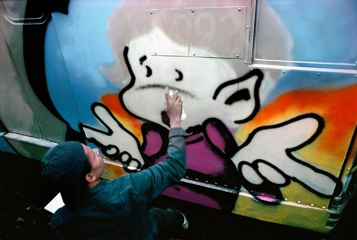
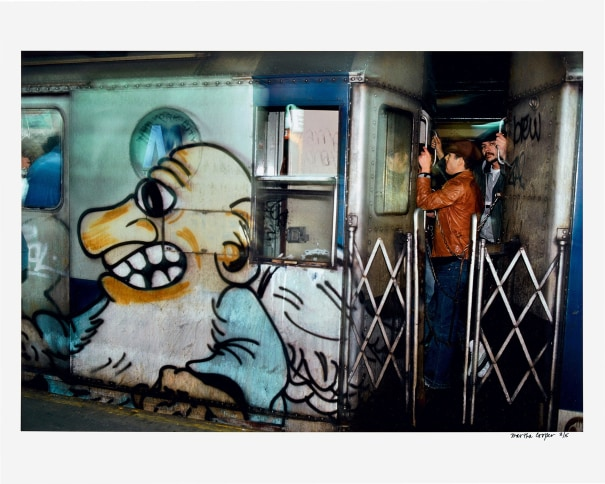
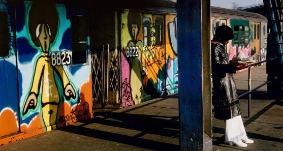
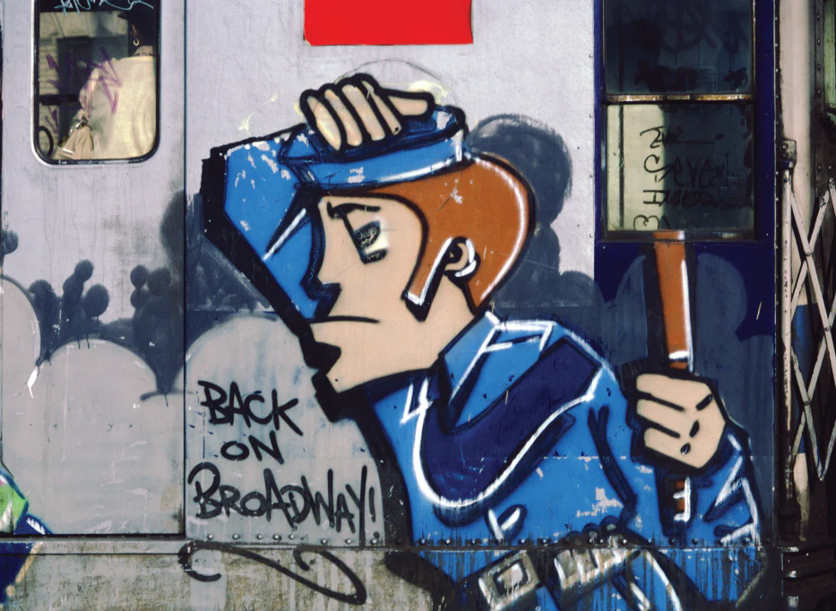
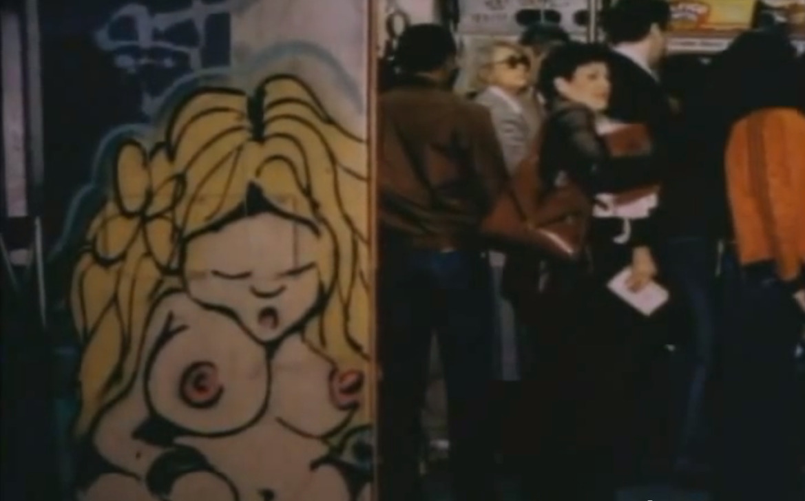
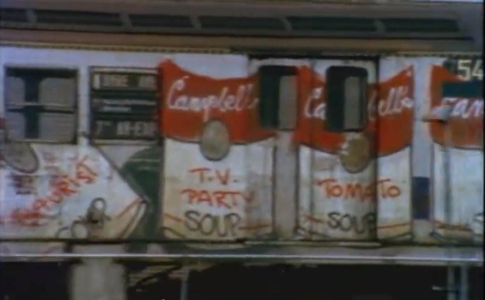
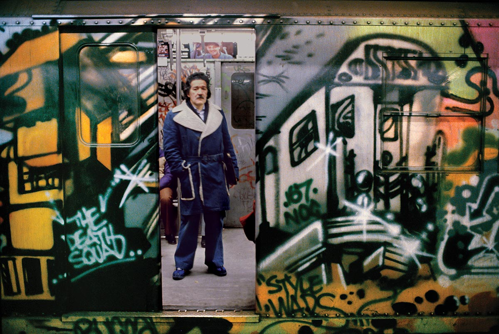
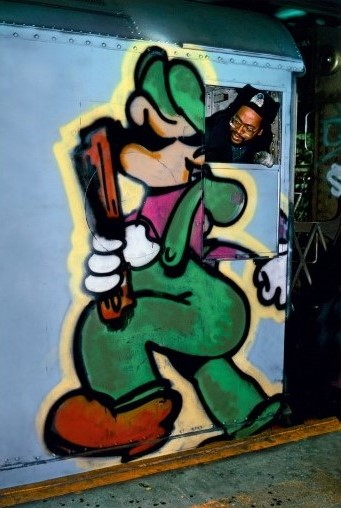
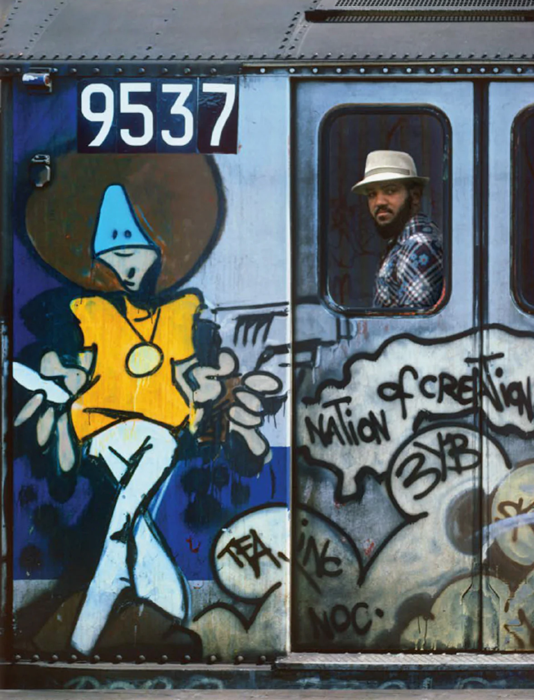
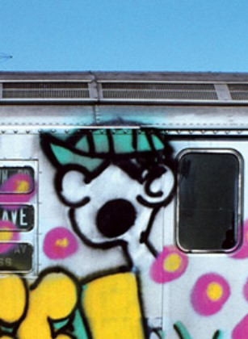
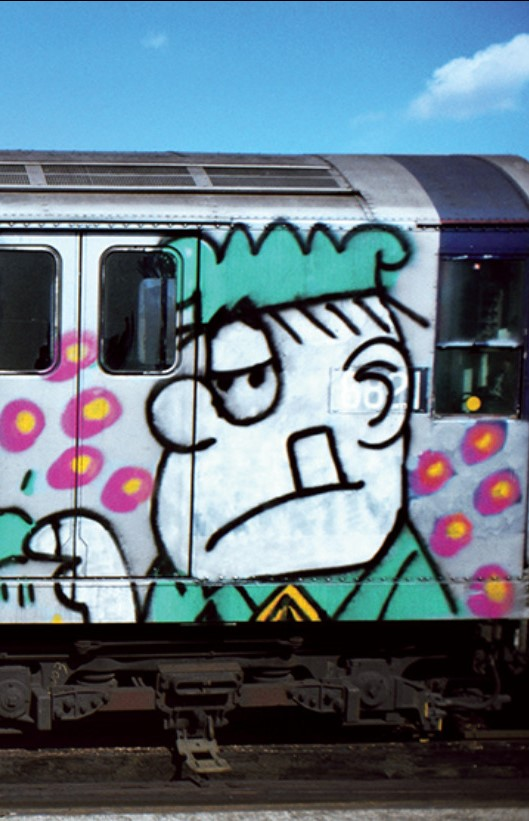
Algunos personajes de la época
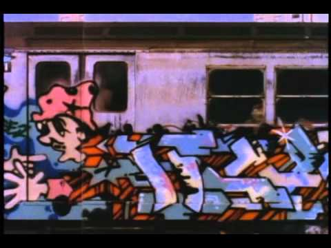
Personaje saliendo detrás de las letras
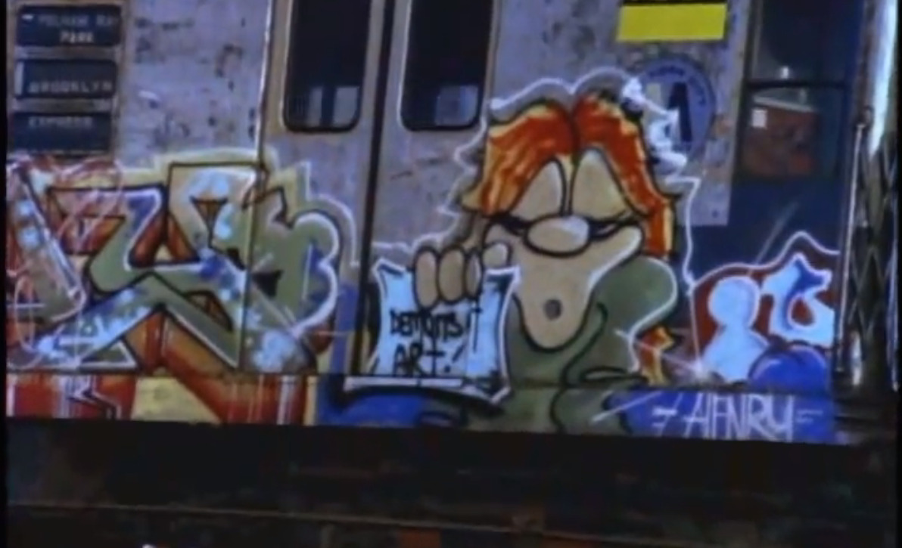
Personaje mostrando el nombre del grupo "Demons art"
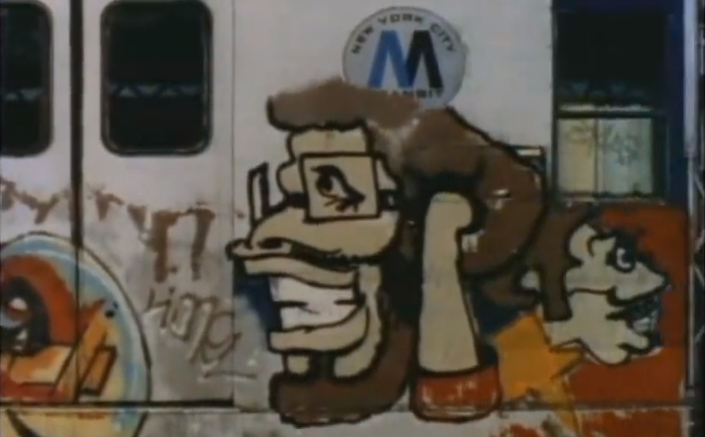
Dibujo de dos rostros al final de un vagón debajo del logo del metro de New York
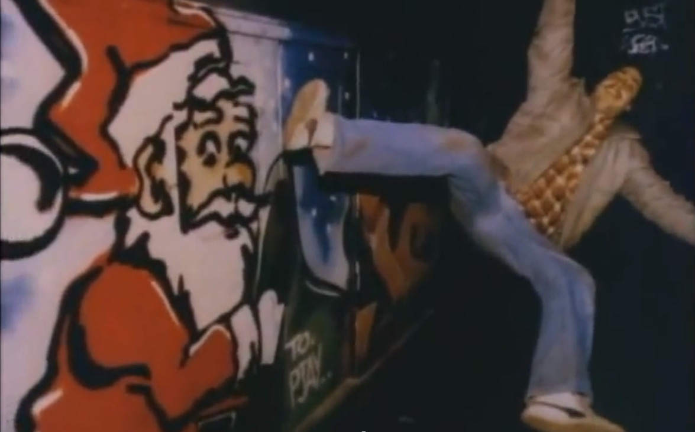
Santa claus realizado por Seen
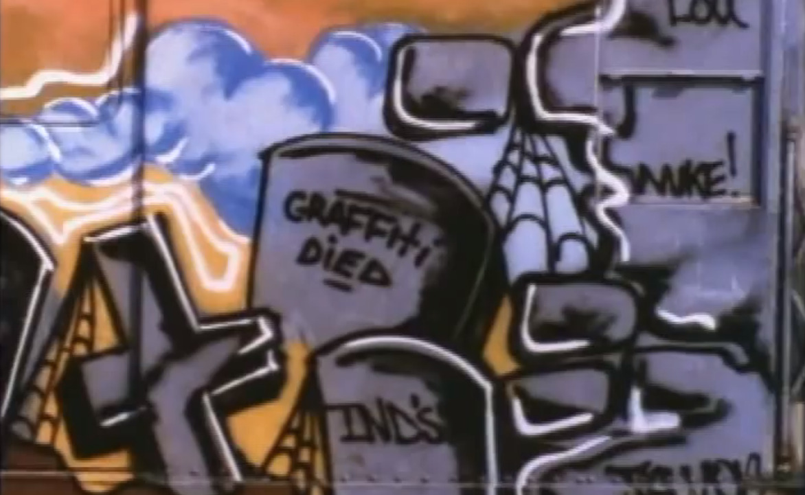
Lápidas de personaje
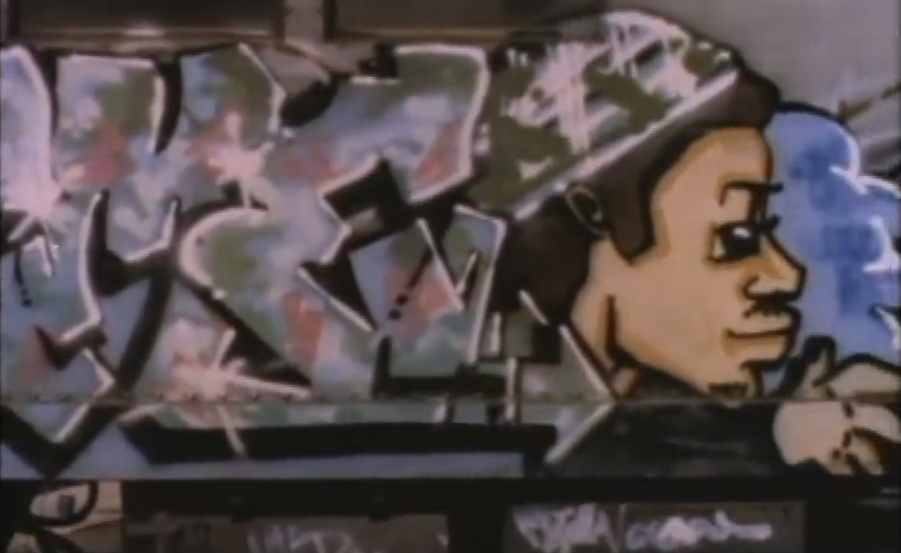
Clásico personaje del escritor Skeme
Graffiti 1980 New york
Este es un extracto de la pelicula, "Dream City" .